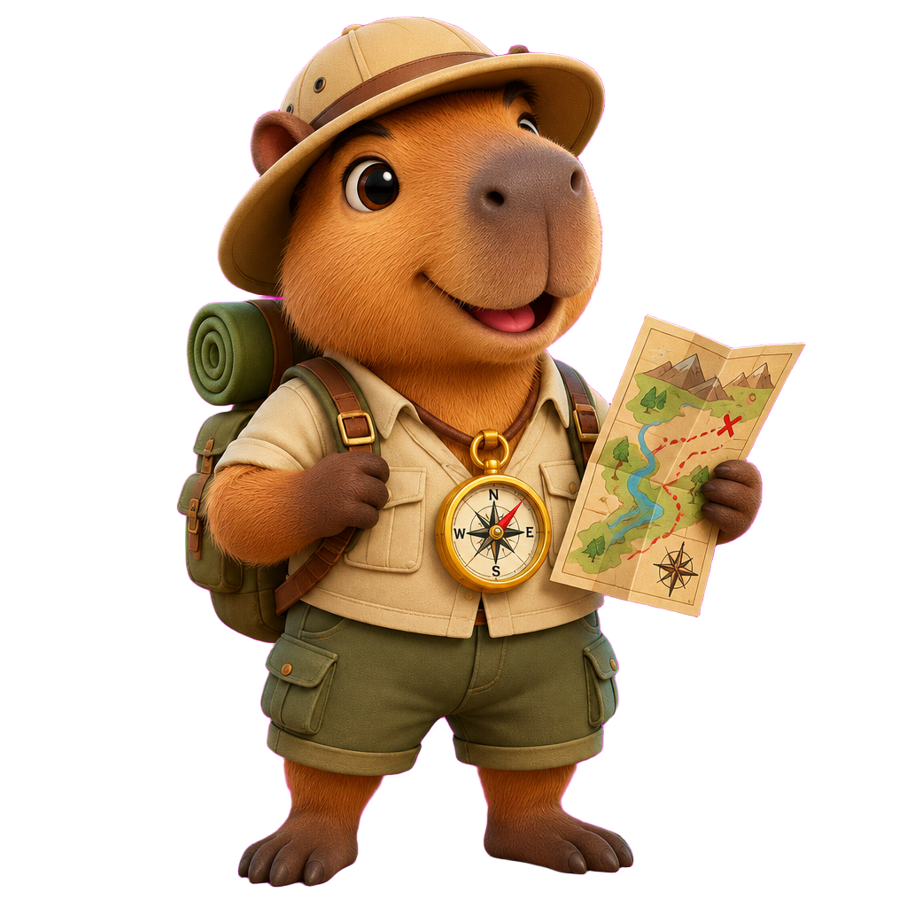

Plataforma Gamificada de Geografia
O Brasil e o Mundo nas Pistas
A plataforma interativa que transforma o ensino de Geografia em uma expedição de descobertas através de dados reais, mapas 3D e cenários em 360°.
02 · O Propósito Pedagógico
Alunos percorrem ruas, biomas e relevos brasileiros em 360°, observando pistas de relevo, clima e arquitetura.
Sinais de vegetação, placas e coordenadas transformam-se em raciocínio geográfico prático.
Cada palpite e resposta alimenta o dashboard do professor com precisão de km e pontuação.
03 · Universo de Jogos
Exploração em 360 graus com Google Street View e palpite em mapa Leaflet de alta resolução.
Enigmas geográficos, coordenadas, patrimônio histórico e cartas investigativas.
Capitais, estados, relevo, hidrografia e geopolítica em desafios dinâmicos.
Visualização tridimensional das camadas da Terra, limites convergentes e dorsais oceânicas.
04 · Mascote & Narrativa
A capivara exploradora que guia o estudante em cada expedição. Traz feedbacks positivos, dicas com rigor científico e curiosidades integradas ao acervo do IBGE Educa.
27
Unidades Federativas com dados reais
6
Biomas Brasileiros mapeados

05 · Inteligência Pedagógica
Precisão e engajamento médio por turma (GeoEduca Analytics)
10
Tentativas diárias por aluno (controle gamificado de excessos)
Competição cooperativa saudável entre salas, séries e turnos.
Correção automática de gabaritos físicos via câmera com geração de notas.
06 · Arquitetura & Inovação
Leaflet
Mapas Interativos
Three.js
Visualização 3D
Protomaps
Vetores em Canvas
Node.js
API RESTful
Firebase
Banco em Tempo Real
07 · Fechamento & Futuro
GeoEduca: Transformando salas de aula em expedições geográficas inesquecíveis.
Plataforma Gamificada de Geografia
O Brasil e o Mundo nas Pistas